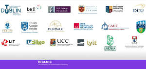

TU Dublin researchers secure funding from HEA for two new Projects on Gender Balance
Researchers from the School of Computer Science at TU Dublin have received funding from the HEA’s Gender Equality Enhancement Fund for two new research projects entitled 'TechMate and ‘PSTEM Role Models’. TU Dublin will take the lead on the ‘TechMate’ project which will see the creation of a brand new toolkit for best practice in gender equality in Higher Education. Meanwhile TU Dublin will join lead partner UCD in the pSTEM Role Models project which focusses on encouraging more young women into STEM by identifying contemporary female role models and sharing their stories online. The under-representation of women in particular areas of STEM and the absence of prominent, contemporary female role models in pSTEM are the key motivations for this project.
TechMate Toolkit
Led by Prof. Sarah Jane Delany and Dr Susan McKeever the 'TechMate’ project aims to create a toolkit in best practice for sustainable acceleration towards gender equality in the technology disciplines at Higher Education Institutes. They will be joined in the project by research peers Dr Catherine Mooney (University College Dublin), Dr Keara Barrett (IT Carlow) and Dr Rosemary Monahan (Maynooth University).
As fellow computer scientists based at TU Dublin Prof. Delany and Dr McKeever, were both motivated to develop this new toolkit out of what they saw as an urgent necessity to address the gender imbalance that exists within computer science at a professional as well as an academic level. The discipline of computer science (CS) remains one of the most heavily gender imbalanced areas in Higher Education. For example, whilst there has been some improvement in the past few years - TU Dublin has increased its female intake into its CS related courses from 30% to 35% since 2015 - the number of new female entrants into IT programmes across all Higher Education Institutes in Ireland remains at approximately 15% over the past decade. These figures are also represented in the professional and academic sphere with female staff in Ireland’s CS faculties currently representing less than a quarter of all staff (24%). For Professor Delany the TechMate toolkit is a way to create the right type of learning environment in order to properly address these gender imbalances:
“We are delighted to have been successful in getting funding for this focussed gender equality initiative. The pipeline of female students coming into undergraduate computing and technology programmes at third level is crucial, as it underpins the potential to achieve gender balance in computer science staff, research and in industry. Providing an environment for female students to have a positive experience at third level and so become ambassadors for the sector will be key to any pipeline strategy. “
‘TechMate’ Proposal
The project thus proposes to research and develop a new toolkit ( TechMate ) of best practice techniques and methods for recruiting and retaining female students on technology-focussed programmes. The development of TechMate will involve research into best practices nationally and internationally. A key input will be the practical and guiding experiences of the proposal partners, representing both university and IoT profiles. As the lead partner TU Dublin will look to draw on its experience over the last 5 years of increasing its intake of female students to its computer science programmes. The idea will be to support these experiences by identifying the best practices with all partners - supplemented with solid, research-driven approaches.
The HEA’s Gender Equality Enhancement funding will fund a postgraduate student for one academic year to conduct this research. The postgraduate student will be registered as a research postgraduate at TU Dublin and will be co-supervised by Professor Brenda Murphy, founding member of Department of Gender & Sexualities at University of Malta, who is an expert in gender studies.
INGENIC
TechMate will be circulated to all HEIs nationally through the INGENIC (Irish Network for Gender Equality at National 3rd Level Institutions for Computing) network. Consisting of representatives from 18 different third-level institutes across Ireland the INGENIC network’s stated aim is to help third-level institutes collaborate and work together to create learning environments which it is hoped will lead to a greater intake and retention of female students.

The INGENIC Network consists of 18 different third level institutes across Ireland
The idea is that using this network the representatives on INGENIC will work to implement the best practice techniques promoted by TechMate in their own institution. Speaking about the role of the INGENICS network in promoting 'TechMate' Dr McKeever said:
“TechMate, like any gender initiative, has to reach and be relevant to all third levels in Ireland - and that’s where INGENIC comes in. We’ve worked hard at creating this unique cooperative network of 18 computer science schools across Ireland. Under TechMate, we can work with our partners across INGENIC to gather and give best practice across the country”
For the School of Computer Science at TU Dublin these newly announced projects are part of much broader vision of creating a more inclusive and accessible learning environment. In the past few years, the implementation of this new vision has led to the adoption of a number of initiatives including: CodeFirst Girls; ESTeEM Mentoring programme and success in the Senior Academic Leadership Initiative (SALI). This vision for the School is now reflected on a national level with the release in 2018 of the National Action Plan of the Gender Equality Taskforce.
Gender Equality Enhancement Fund
The Gender Equality Enhancement Fund was established following the recommendations set out in the Action Plan of the Gender Equality Taskforce. The aim of the fund is to support innovative organisational and cultural change initiatives.
The primary objectives of the Gender Equality Enhancement Fund are:
to encourage innovative approaches to addressing gender inequality across HEIs;
to facilitate gender equality initiatives that respond to the recommendations of the HEA Expert Group and/or Gender Equality Taskforce’s recommended actions;
to encourage cross-sectoral collaboration as a means to achieve national transformation
TU Dublin Computer Science March 2021. For More Information Contact Prof. Sarah Jane Delany (sarahjane.delany@tudublin.ie) and Dr. Susan McKeever (susan.mckeever@tudublin.ie)
.png)